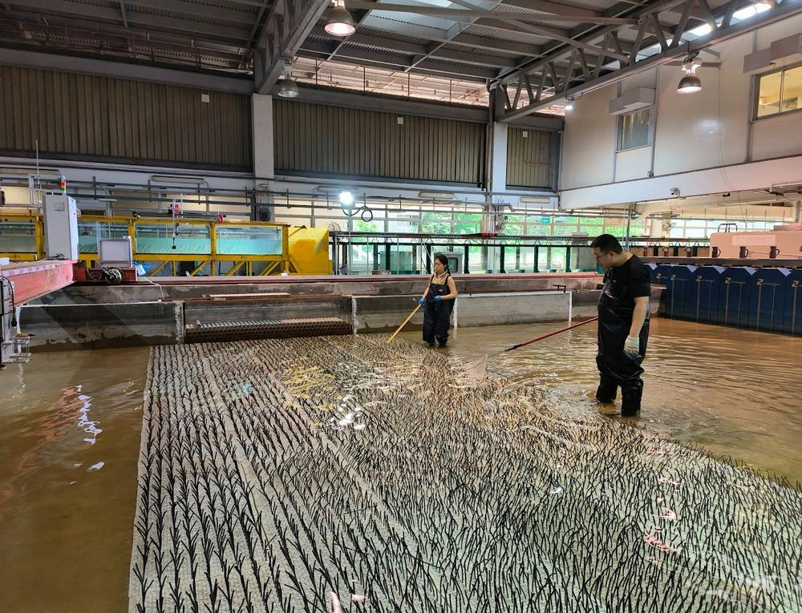
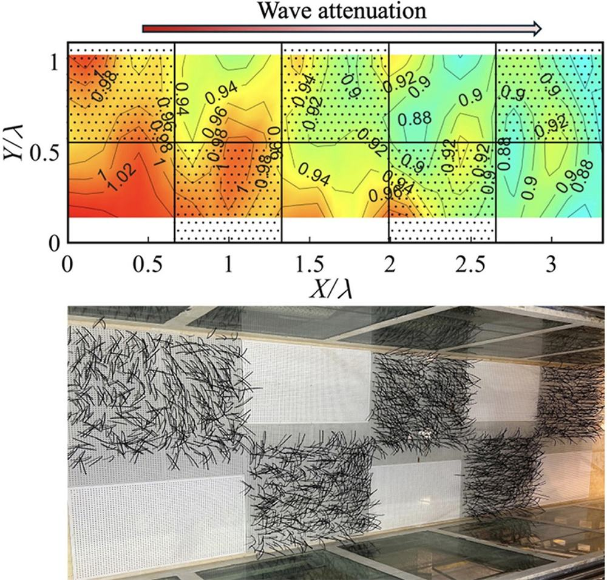
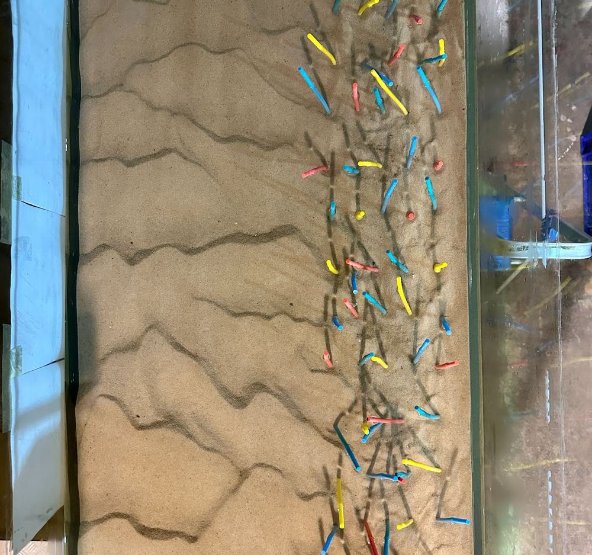
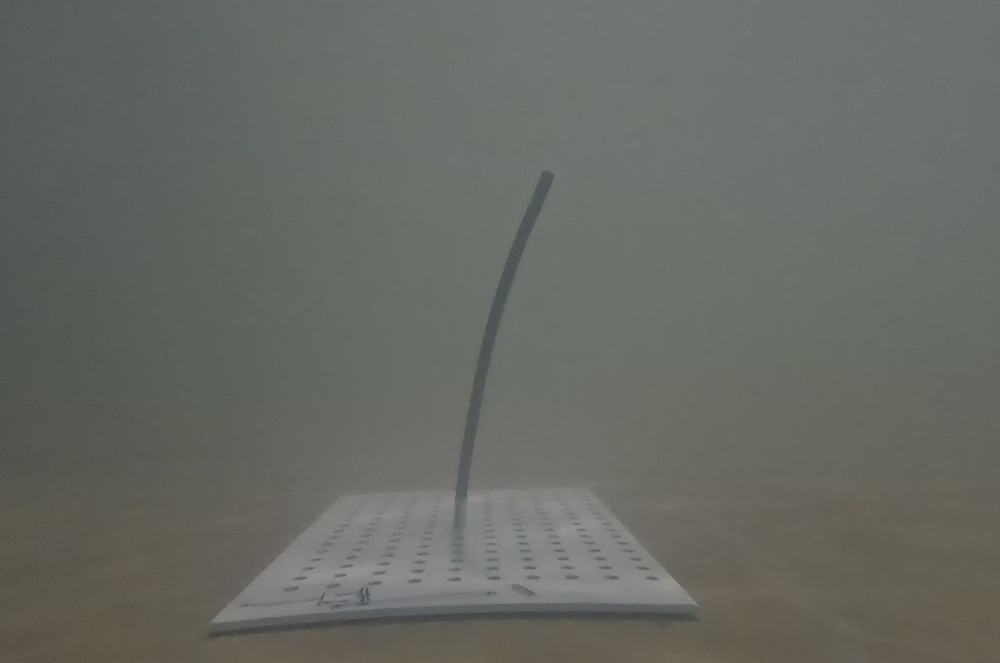
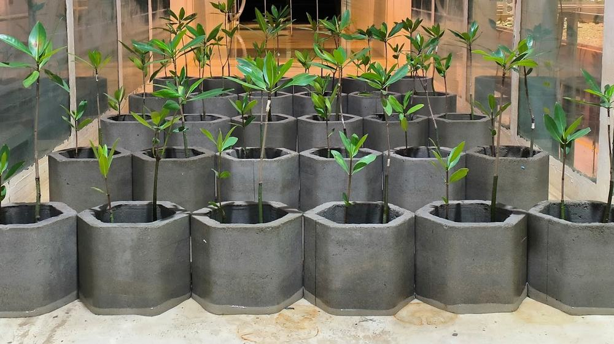
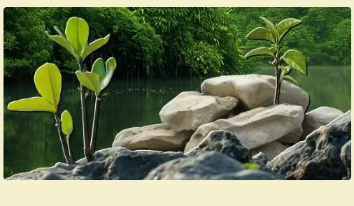

Where flow meets vegetation, sediment, and shoreline.
The Laboratory for Eco-Hydrodynamic Interactions studies environmental fluid mechanics, flow–vegetation–sediment interaction, and nature-based solutions to coastal protection — led by Asst. Prof. Jiarui (Gary) Lei.

Five open questions in coastal fluid mechanics
Each project pairs theoretical derivation with flume-scale experiments, aimed at predictive models that hold up in the field.

Wave Attenuation over a Partially Vegetated Flume
An analytical model for how effectively wave energy dissipates over partially vegetated waters. As waves cross into a vegetated stretch, amplitude is expected to fall while energy transfers between vegetated and open regions — tested through theory and flume experiments, and used to calibrate vegetation parameters in models such as XBeach.

Wave Damping under Oblique Wave–Current Conditions
Most models of wave damping by aquatic vegetation assume pure waves or currents running parallel to them. Few address the orthogonal case — current perpendicular to wave travel, typical of wave-induced longshore currents near shore. This project builds a universal predictor through theory and lab experiment.

Turbulence & Sediment Erosion along 3-D Submerged Canopies
How hydrodynamics inside coastal habitats governs sediment behaviour. A coupled flow–vegetation–sediment model is being developed to predict local erosion rates beneath three-dimensional submerged canopies.

Shore Protection with Integrated Nature-Based Solutions
Hybrid green–grey defences, examined three ways: the mechanical behaviour of hybrid solutions across flow conditions; how they respond to sea-level rise and extreme events; and theoretical/empirical models capturing wave attenuation and sediment transport where wave–current flow meets these hybrid structures.

Underwater Imaging for Monitoring Submerged Structures & Vegetation
Computer vision and machine learning, folded into monitoring systems for fluid–structure interaction. Waves, currents, sediment transport, water quality, and surf forecasting all depend on fast, accurate local flow measurement — and the visible sway of flexible structures or vegetation turns out to be a useful proxy for that flow. The resulting framework aims to be a cheap, ubiquitous alternative to conventional instrumentation.
Led from the field and the flume
Jiarui (Gary) Lei
Assistant Professor, Civil & Environmental Engineering
National University of Singapore — joined October 2021
- 2019Ph.D., Civil & Environmental EngineeringMassachusetts Institute of Technology
- 2014B.S., Civil EngineeringUniversity of Michigan, Ann Arbor
- 2014B.S., Mechanical EngineeringShanghai Jiao Tong University
Postdocs and PhD students, we want to hear from you.
Send a CV and a short note on your prior research and interests — we read every email.